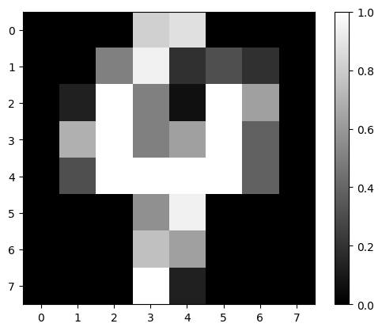
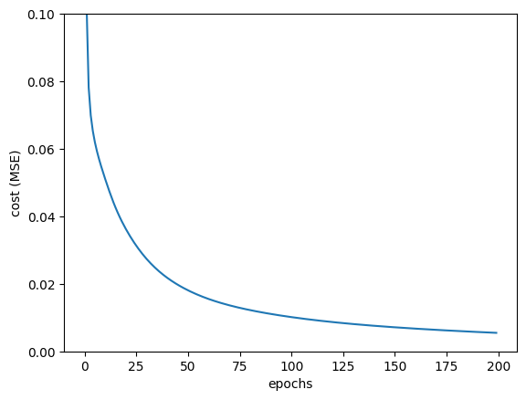

import matplotlib.pyplot as plt
import numpy as np
# Copied from listing 12.1
def train_test_split(X, Y, fraction, seed=None):
"""
Returns a training and a testing dataset (Python Listing 12.1)
X and Y are numpy arrays with as many rows as samples, fraction (=0..1) defines
the relative amount of training data, and seed is the initialization of the
random number generator.
"""
rng = np.random.default_rng(seed) # initialize random number generator
n_total_data = X.shape[0] # number of data in the full DS
n_training = int(fraction * n_total_data) # use fraction of data for training
indices = np.arange(n_total_data) # range of integers for indexing X and Y
rng.shuffle(indices) # shuffle elements of "indices" in place
X = X[indices] # X and y are shuffled such that each X[i]
Y = Y[indices] # ... is still associated with the same Y[i]
X_training = X[:n_training] # use the first "n_training" points for the
Y_training = Y[:n_training] # training dataset and ...
X_testing = X[n_training:] # the rest of the data for testing.
Y_testing = Y[n_training:]
return X_training, Y_training, X_testing, Y_testing18.5 Python Implementation and Example for the Fully Connected Network
18.5.1 Python Implementation
A step-by-step explanation is given in section 18.5.1 of the MDS book.
We start by creating an abstract base class from which both the activation layer and the fully connected layer are derived:
from abc import ABC
import numpy as np
# For implementing an abstract base class (ABC)
class NNLayer(ABC):
def __init__(self):
self.x = np.empty()
self.y = np.empty()
def feed_forward(self, x):
raise NotImplementedError("Any layer needs to implement the feed_forward method.")
def backward_propagation(self, dJdy, learning_rate):
raise NotImplementedError("Any layer needs to implement the backward_propagation method.")Next, implement the class FullyConnectedLayer which is derived from NNLayer, guaranteeing that all layer types always have the same structure:
class FullyConnectedLayer(NNLayer):
def __init__(self, n_inputs, n_outputs, seed=None):
rng = np.random.default_rng(seed)
self.weights = rng.random(size=(n_inputs, n_outputs)) - 0.5
self.biases = rng.random(size=(1, n_outputs)) - 0.5
def feed_forward(self, x):
self.x = np.atleast_2d(x)
self.y = np.dot(self.x, self.weights) + self.biases
return self.y
def backward_propagation(self, dJdy, learning_rate):
dJdW = np.dot(self.x.T, dJdy)
dJdb = np.dot(np.ones(self.x.shape[0]), dJdy)
dJdy_prev = np.dot(dJdy, self.weights.T)
self.weights -= learning_rate * dJdW
self.biases -= learning_rate * dJdb
return dJdy_prevAs a preparation for the activation layer, we now define a activation function and its derivative:
Implement the class for the activation layer:
For later use during the training, we now implement the cost function and its derivative based on the MSE:
We are now ready to implement the Network class which contains functionality for assembling the network, for training, and for predicting.
class Network:
def __init__(self, cost_function, derivative_of_cost):
self.layers = []
self.cost_function = cost_function
self.derivative_of_cost = derivative_of_cost
def add_layer(self, layer):
self.layers.append(layer)
def train(self, X_train, Y_train, epochs, learning_rate):
all_costs = []
for i in range(epochs):
cost = 0
for x_train, y_train in zip(X_train, Y_train):
# compute prediction through forward propagations
y_pred = x_train
for layer in self.layers:
y_pred = layer.feed_forward(y_pred)
cost += self.cost_function(y_train, y_pred)
# perform backprop of errors
error = self.derivative_of_cost(y_train, y_pred)
for layer in reversed(self.layers):
error = layer.backward_propagation(error,
learning_rate)
all_costs.append(cost / X_train.shape[0])
return all_costs
def predict(self, X):
Y = []
for x in X:
y = x
for layer in self.layers:
y = layer.feed_forward(y)
Y.append(y)
return np.array(Y) 18.5.2 Application: Identification of Handwritten Digits
For using the dataset there are two options: - Option 1: Use the sklearn-digits dataset. This is a small dataset (an extract from the original “Alpaydin” dataset) and was already preprocessed (e.g., the “images” are flattened into 1D arrays) - Option 2: import the data from the package mdsdata (see https://mds-book.org/Content/datasets for how to install the package). This dataset has more data.
Additionally, we also scale and shuffle the data, and turn each 8x8 image into a 1D array with 64 entries. Last but not least, we don’t train with the full dataset.
# Option 1: Use the entire sklearn-digits dataset:
from sklearn.datasets import load_digits
digits = load_digits()
# Target variable: One-hot-encoding: map each number of the interval [0,9] to a vector
# 9 zeros and a one, such that, e.g., 2 is mapped to [0, 0, 1, 0, 0, 0, 0, 0, 0, 0]
Y = digits.target
Y = np.eye(10, dtype=int)[Y]
# Scale the feature value range to [0, 1]
X = digits.data / 16
# show an example:
im = plt.imshow(X[0].reshape(8,8), cmap='gray')
plt.colorbar(im)
# do the usual train-test split:
X_train, Y_train, X_test, Y_test = train_test_split(X, Y, fraction=0.7, seed=None)
print("shape of X_train:", X_train.shape)
print("shape of Y_train:", Y_train.shape)shape of X_train: (1257, 64)
shape of Y_train: (1257, 10)
# Option 2: Use the MDS-Data dataset which is a larger dataset
from mdsdata import DS2_light
digits = DS2_light.load_data()
# Scale the feature value range to [0, 1]
X = digits.data / digits.data.max()
# for training each image should be "flattened" into a "vector" of 64 elements
X = X.reshape(X.shape[0], -1)
# Target variable: One-hot-encoding: map each number of the interval [0,9] to a vector
# 9 zeros and a one, such that, e.g., 2 is mapped to [0, 0, 1, 0, 0, 0, 0, 0, 0, 0]
Y = digits.target
Y = np.eye(10, dtype=int)[Y]
# shuffle all images -- just because we will take the first few images only
# and want to be sure that they are not sorted in some way (they aren't, but
# better safe than sorry...)
n_images = 1257 # that's also the number of images in the scikit-learn dataset...
indices = np.arange(X.shape[0])
np.random.shuffle(indices)
indices = indices[:n_images]
X = X[indices]
Y = Y[indices]
# show an example:
im = plt.imshow(X[0].reshape(8,8), cmap='gray')
plt.colorbar(im)
# do the usual train-test split:
X_train, Y_train, X_test, Y_test = train_test_split(X, Y, fraction=0.7)
print("shape of X_train:", X_train.shape)
print("shape of Y_train:", Y_train.shape)shape of X_train: (879, 64)
shape of Y_train: (879, 10)
Assemble the network: We chose an architecture consisting of as many input nodes as there are features which is why in the code we use X_train.shape[-1] .
nn = Network(MSE, dMSE_dy)
nn.add_layer(FullyConnectedLayer(X_train.shape[-1], 80))
nn.add_layer(ActivationLayer())
nn.add_layer(FullyConnectedLayer(80, 40))
nn.add_layer(ActivationLayer())
nn.add_layer(FullyConnectedLayer(40, 10))
nn.add_layer(ActivationLayer())
# Note that this might take up to a minute ...
train_mse = nn.train(X_train, Y_train, epochs=200, learning_rate=0.01)
train_mse[0], train_mse[-1](0.2443321630318221, 0.005482129345692458)Let us now plot the mean loss for each epoch:
fig, ax = plt.subplots()
ax.plot(train_mse)
ax.set(xlabel='epochs', ylabel='cost (MSE)', ylim=(0, 0.1))
Last but not least, the confusion matrix shows information about how many images were correctly or wrongly classified as one of the digits:
confusion_matrix = np.zeros((10, 10), dtype=int)
Y_pred = nn.predict(X_test)
correct = 0
for yt, yp in zip(Y_test, Y_pred):
pred_digit = np.argmax(yp)
true_digit = np.argmax(yt)
confusion_matrix[true_digit, pred_digit] += 1
if true_digit == pred_digit:
correct += 1
print(f"{correct} out of {Y_pred.size} images were correctly predicted")361 out of 3780 images were correctly predicted